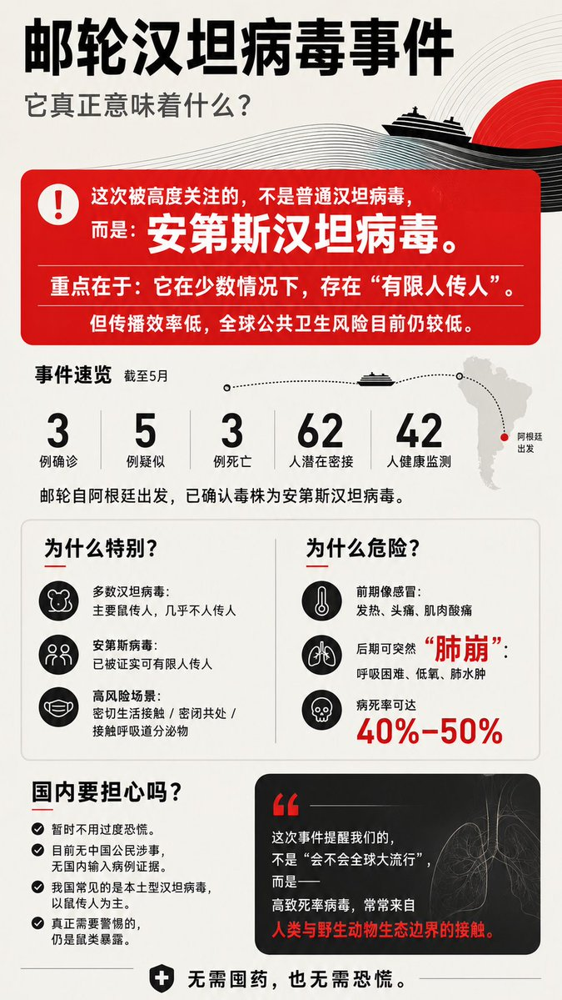
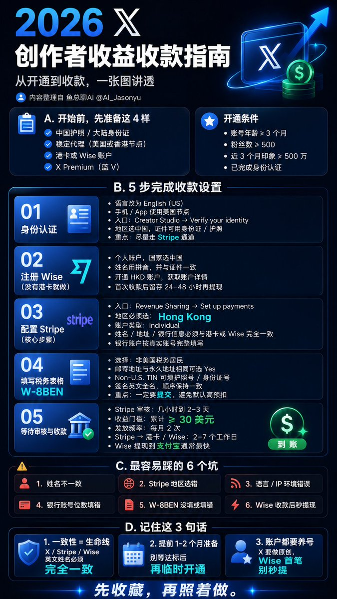

很多信息，我不是不没耐心读。
是我更偏好：视觉方式呈现后，来消化
————
现在的信息太多太杂，很多内容又臭又长，话多但重点匮乏
所以我炼化了这个提示词
它的作用很简单：
把一大段文字，整理成一张更容易理解的图。
比如我看到一篇文章。
里面观点很多、结构很散、表达如乱麻绕。
————
你只需要选中文本，
套用这个提示词。
它就会帮我把核心信息，
重新排列、压缩、可视化。
最后变成一张图（我想了不少办法，让这个图片利于理解）。
——————
这不是为了偷懒。
而是为了更快、更好抓住重点。
我感觉，这会成为我接下来日常里，
使用频率很高的提示词之一。
————
尤其适合两类人：
1️⃣ 一种是和我一样，更依赖视觉理解的人。
2️⃣ 另一种是创作者。
如果你写了一篇好文章，
别只照顾爱读文字的人。
也可以顺手生成一张图，
帮视觉型读者更快进入你的内容。
————
文字负责深度。
图片负责入口美化。
两者配合起来，更直观，更多愉快的信息获取体验。
——————
提示词见文末 ⤵️
——————
如下是我一些VCR
https://chatgpt.com/s/m_6a033e16dd708191bd2af58e398b8083
⬇️

https://chatgpt.com/s/m_6a033e337d608191acf5d2680a53f911
⬇️
https://chatgpt.com/s/m_6a033e4e3f788191bcdda1a63594b809
⬇️

https://chatgpt.com/s/m_6a033e59ae10819197e807274235c0b6
https://chatgpt.com/s/m_6a033ed3af008191a877d866b00c7778
下
```
苹果设计师思维，顶级海报大师思维，用高桥流思路
呈现海报设计
输入一段或多段长文本
智能理解文本内容，不必逐字照搬
自动分析用户理解流程，按认知逻辑梳理信息
提炼文本的核心价值、关键知识点、中心思想和亮点观点
按照人脑阅读和理解顺序呈现信息，让用户自然 get 核心内容
压缩长文本为可在30-45秒内快速理解的精华内容
文字在手机端默认显示状态下清晰可读，字体大小、行距、层次合理
用超大字或重点标注突出核心信息，避免冗长或晦涩表达
智能判定配色逻辑、排版结构和信息层次，保证视觉呼吸感
打平用户理解成本，让信息简单明了，一眼就抓住重点
消除理解障碍，确保读者读完海报后能快速掌握中心思想
不要额外添加无关文字
保持海报抓人、直击人心的表现力
如下代码块中是，本次要处理的原始文字
🍎🍎你输入的文本🍎🍎
```
https://chatgpt.com/s/m_6a033efe9f048191b46337bd916c731b
https://chatgpt.com/s/m_6a033f29d8488191a5679b020c3cf601
⬇️
所有文字，来源于推友，稍后补充名单，谢谢。
如下是提示词
多くの情報に対して、私は忍耐力がないわけではありません。
ただ、視覚的に提示されたものを消化する方が好きなのです。
————
今の情報は多すぎて雑多で、多くのコンテンツは冗長で長ったらしく、言葉は多いのに要点が乏しいのです。
だから私はこのプロンプトを練り上げました。
その役割はシンプルです：
長い文章を、より理解しやすい一枚の図に整理すること。
例えば、ある記事を読んだとします。
中には多くの観点があり、構造はバラバラで、表現は絡まった麻のように混乱しています。
————
あなたはテキストを選択して、
このプロンプトを適用するだけです。
すると、核心的な情報を
再配置・圧縮・可視化してくれます。
最終的に一枚の図になります（理解しやすい図にするために、いろいろ工夫しました）。
——————
これは手抜きのためではありません。
より速く、より良く要点を掴むためです。
これは、これからの日常で、
使用頻度が非常に高いプロンプトの一つになる気がします。
————
特に二種類の人に適しています：
1️⃣ 一つは、私のように視覚的理解により依存している人。
2️⃣ もう一つは、クリエイターです。
もし良い記事を書いたなら、
文字を読むのが好きな人だけを気遣わないでください。
ついでに一枚の図を生成して、
視覚型の読者がより早くあなたのコンテンツに入れるようにしましょう。
————
文字は深みを担当します。
画像は入り口の美化を担当します。
両方を組み合わせることで、より直感的で、より楽しい情報取得体験になります。
——————
プロンプトは文末にあります ⤵️
——————
以下は私のいくつかの実演です
https://chatgpt.com/s/m_6a033e16dd708191bd2af58e398b8083
⬇️
https://chatgpt.com/s/m_6a033e337d608191acf5d2680a53f911
⬇️
https://chatgpt.com/s/m_6a033e4e3f788191bcdda1a63594b809
⬇️
https://chatgpt.com/s/m_6a033e59ae10819197e807274235c0b6
https://chatgpt.com/s/m_6a033ed3af008191a877d866b00c7778
⬇️
```
苹果设计师思维，顶级海报大师思维，用高桥流思路
呈现海报设计
输入一段或多段长文本
智能理解文本内容，不必逐字照搬
自动分析用户理解流程，按认知逻辑梳理信息
提炼文本的核心价值、关键知识点、中心思想和亮点观点
按照人脑阅读和理解顺序呈现信息，让用户自然 get 核心内容
压缩长文本为可在30-45秒内快速理解的精华内容
文字在手机端默认显示状态下清晰可读，字体大小、行距、层次合理
用超大字或重点标注突出核心信息，避免冗长或晦涩表达
智能判定配色逻辑、排版结构和信息层次，保证视觉呼吸感
打平用户理解成本，让信息简单明了，一眼就抓住重点
消除理解障碍，确保读者读完海报后能快速掌握中心思想
不要额外添加无关文字
保持海报抓人、直击人心的表现力
如下代码块中是，本次要处理的原始文字
🍎🍎你输入的文本🍎🍎
```
https://chatgpt.com/s/m_6a033efe9f048191b46337bd916c731b
https://chatgpt.com/s/m_6a033f29d8488191a5679b020c3cf601
⬇️
すべての文字はフォロワーの皆様によるものです。リストは後ほど追加します。ありがとうございます。
以下がプロンプトです